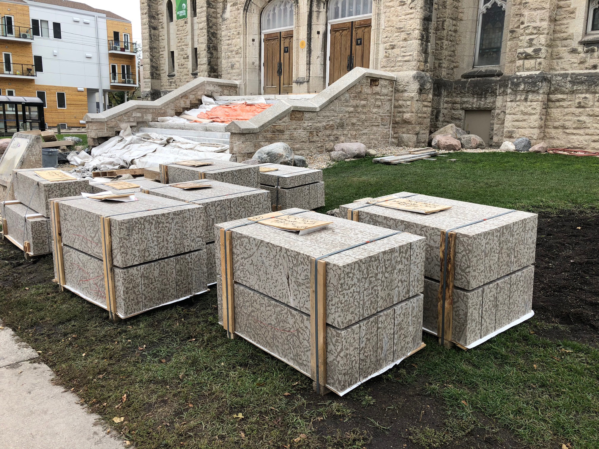

-1-MasterItem.svg)
Stories of Westminster United Church & its People / Page
243
A major portion of the steps not in good shape and a landing half way down were
removed right
down to the footings. The footings were fine so we rebuilt over them. The stairs
were (are) redesigned
so that that lower landing has disappeared and two stairs were substituted. Note
that that north side
retainer wall was heaving over so it too had to be repaired.
Tyndall Stone was brought in from the
Gillis Quarries
(near Garson, Manitoba) to bring about
re-structuring. The Gillis name is well known in Westminster. Many of the Gillis
family have sat
in our pews as members of the congregation.
Table
of Contents
Many Things
